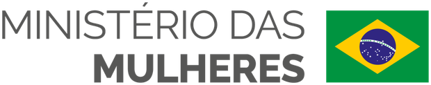
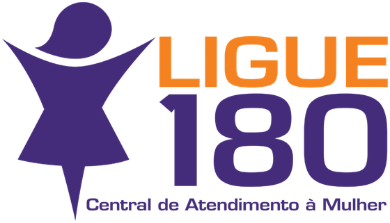

Uma camiseta com dois QR Codes dá acesso gratuito a um programa que treina o cérebro através de neuroplasticidade, aumentando sua capacidade de frear impulsos, reduzindo padrões de posse e fortalecendo autocontrole, empatia e responsabilidade neurologicamente.
Através da camiseta, existem dois possíveis percursos: um para mulheres desenvolverem autonomia e discernimento; outro para homens desenvolverem autocontrole, igualdade e escolha consciente antes que o impulso vire violência.
Antes da agressão, há sinais internos: ciúme, posse, raiva, frustração, necessidade de controle, humilhação, impulsividade e incapacidade de frear a própria reação. Todo esse comportamento nasce no cérebro.
Transformar exige mais do que informar. Exige alterar, no cérebro, os caminhos neurais que geram comportamentos agressivos e irracionais - fortalecendo a empatia, o autocontrole e a razoabilidade, neurologicamente.
Ataque, defesa, posse, impulso, dependência, busca de segurança. Fazem parte da nossa ancestralidade biológica.
Autocontrole, empatia, responsabilidade, autonomia, discernimento, decisão moral - associadas ao córtex pré-frontal.
Fortalece autocontrole, empatia, responsabilidade e a capacidade de conter impulsos agressivos ou possessivos.
Fortalece autonomia, discernimento e integridade para reconhecer padrões de controle antes que sejam confundidos com cuidado.
Conscientização informa. Neuroplasticidade treina. Virtudes treinadas fortalecem o cérebro que freia a violência e sustenta relações mais livres.
A camiseta não é merchandising. É símbolo, manifesto e mídia descentralizada. Cada pessoa que veste o Inteiras carrega uma porta pública de acesso ao programa gratuito.
A camiseta leva a mensagem do Inteiras para outras pessoas.
Dois caminhos ficam disponíveis: um percurso para mulheres e outro para homens, ambos gratuitos e acessíveis pelo QR Code.
A pessoa entende como impulsos, posse, controle, medo, ciúme e violência funcionam cientificamente.
Com exercícios simples e repetidos de neuroplasticidade, fortalece as partes do cérebro ligadas ao autocontrole, à empatia, à responsabilidade e à escolha consciente.
Um percurso para fortalecer mulheres diante de papéis culturais e padrões primitivos que as colocam como dependentes, protegidas, escolhidas ou avaliadas pela beleza. Ajuda a reconhecer que cuidado não é controle, proteção não é posse e amor não é domínio.
Um percurso para homens compreenderem o machismo estrutural, reconhecerem seus impactos e treinarem virtudes que reduzem dominação, posse, impulsividade e violência - fortalecendo o córtex pré-frontal e as funções executivas.
O homem precisa desenvolver virtudes para não dominar. A mulher precisa desenvolver completude para não aceitar dominação como cuidado.
O Inteiras não responsabiliza a mulher pela violência que sofre. A responsabilidade é sempre de quem agride. O percurso feminino fortalece autonomia e discernimento - nunca culpabiliza a vítima.
A mulher não precisa depender de um homem para existir, escolher, viver ou ter dignidade. Autonomia econômica e emocional são parte da liberdade.
Proteção não pode virar vigilância, posse ou domínio. Em uma relação madura, cuidado é mútuo. Ninguém é dono de ninguém.
O valor de uma mulher não está em ser escolhida, desejada ou aprovada pela aparência. Dignidade não depende de validação externa.
O Inteiras forma mulheres para não se reduzirem a esses papéis - e homens para não ocuparem esses lugares de dominação.
Toda a receita das camisetas será destinada à doação do livro O Novo Eu a pessoas privadas de liberdade, em unidades masculinas e femininas. É um livro-programa com exercícios de neuroplasticidade das virtudes - o mesmo método do curso, voltado ao fortalecimento da consciência, da responsabilidade e do autocontrole.
Formar caráter antes que a violência se organize.
Desenvolvimento humano para não repetir ciclos de violência.
O programa já produziu relatos de transformação em pessoas privadas de liberdade - aumento de consciência, responsabilidade e reflexão sobre escolhas, impulsos e relações.
Relatos reais de reeducandos realizando o programa por menos de 3 meses em unidades prisionais:
Dr. Eduardo Casarotto em pronunciamento no Senado Federal - Dia Internacional dos Direitos Humanos.
A metodologia do Inteiras nasce da Virtologia, criada por Dr. Eduardo Casarotto e aplicada pelo Instituto Humanar em programas de desenvolvimento humano, virtudes e reintegração social.
Registros de diálogos institucionais e apresentações públicas da metodologia. Não representam parceria formal.
distribuídas
via QR Code
dos cursos
mulheres e homens
O Novo Eu
contempladas
33 Virtudes · pré e pós
independente
Linha de base e metas a serem definidas em conjunto com instituições parceiras.
O Inteiras conta com o apoio do Ministério das Mulheres na prevenção à violência contra a mulher.



Se você ou alguém que você conhece está em situação de violência, a Central de Atendimento à Mulher atende de graça, 24 horas por dia, em todo o Brasil. A ligação é sigilosa e não aparece na conta do telefone.
Ligar 180 agoraO Inteiras está disponível para construção conjunta com governos, ministérios, secretarias, empresas, artistas e instituições que desejem atuar na prevenção da violência contra mulheres por meio de neuroplasticidade das virtudes, formação humana e reintegração social.